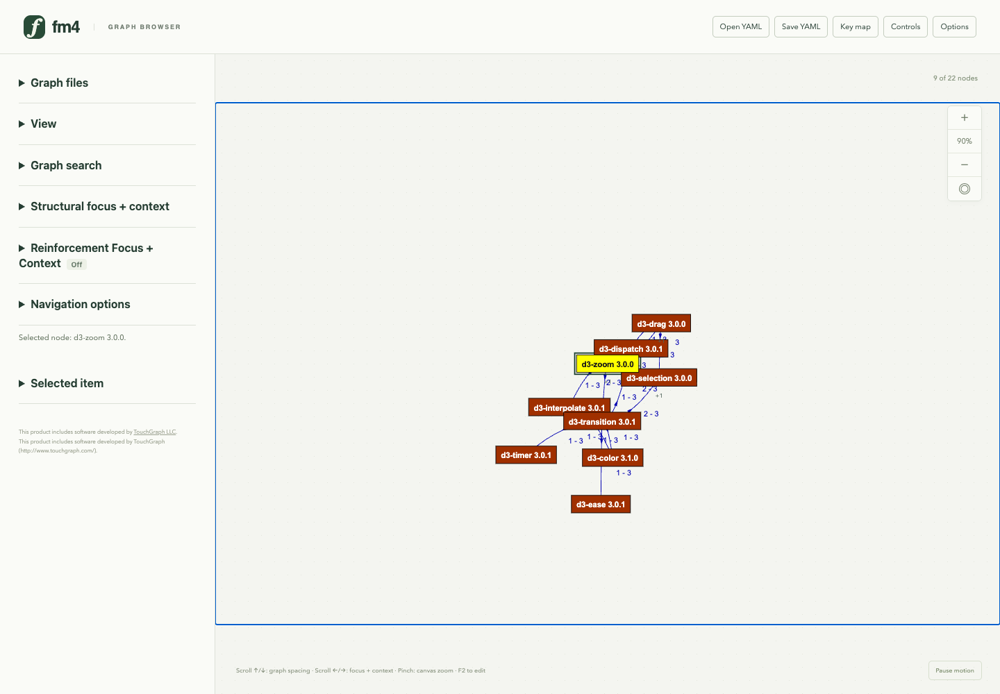
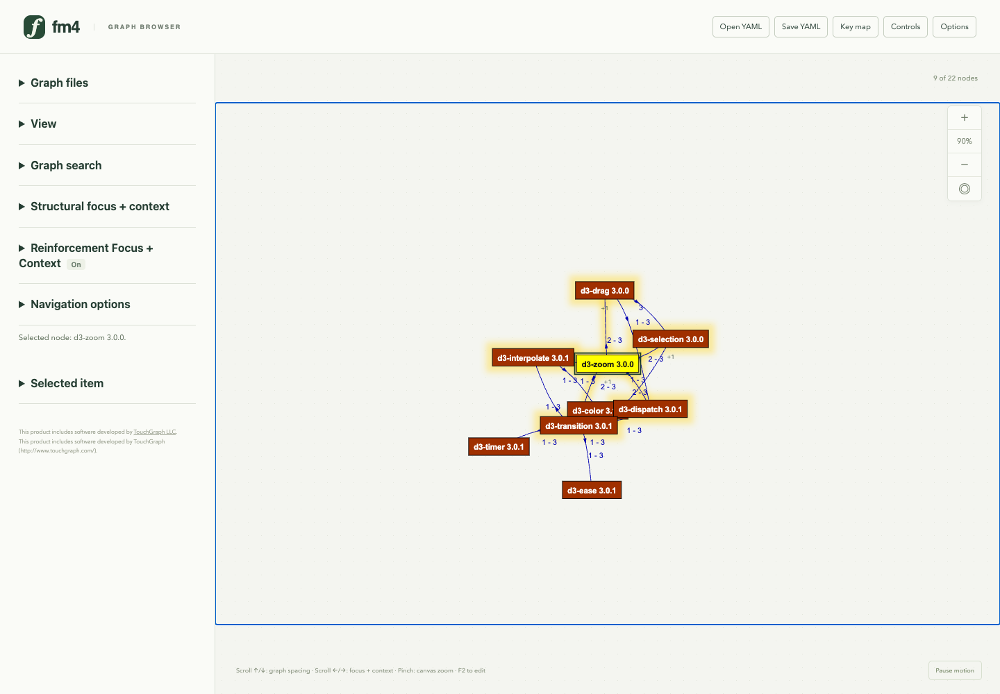
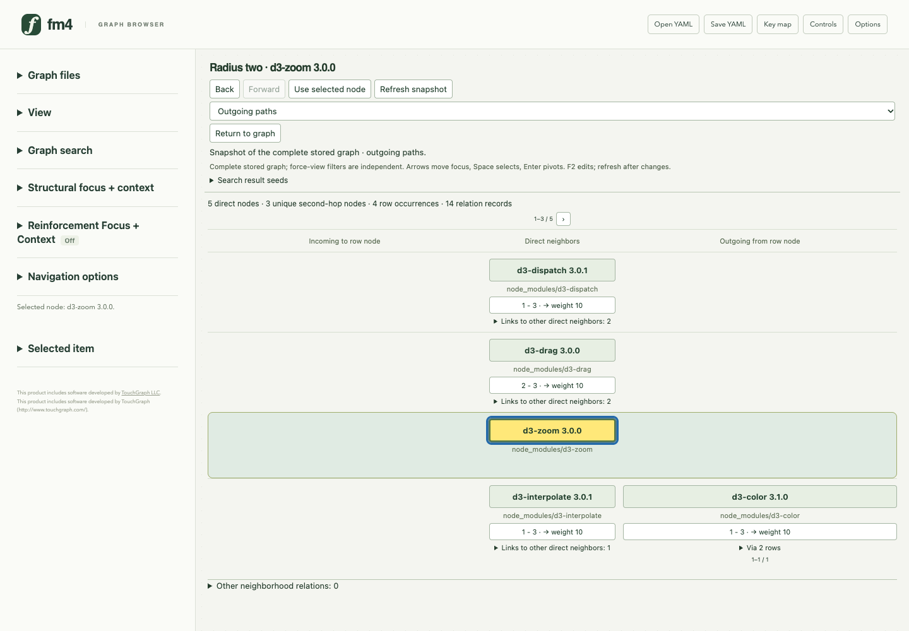
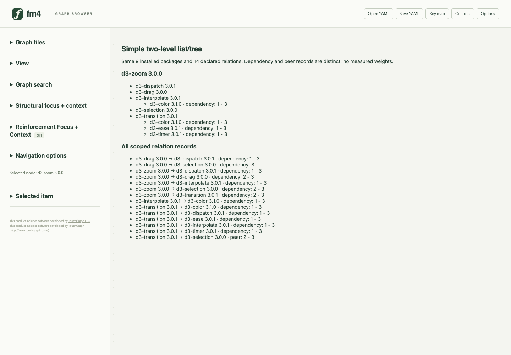
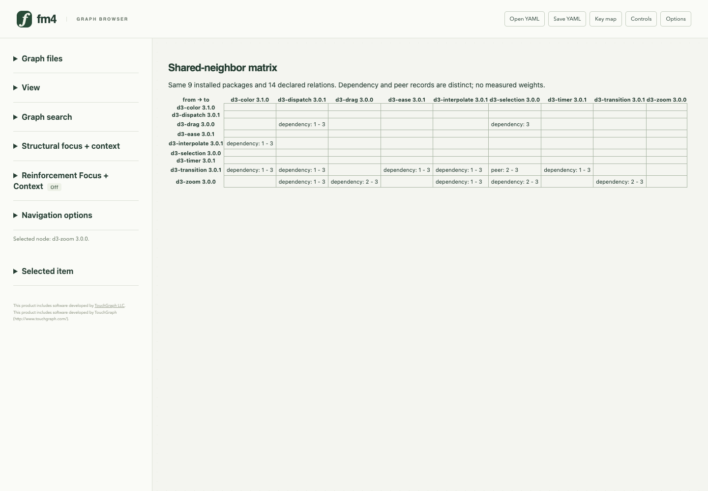

Dependency-analysis comparison Public pinned lockfile. Software correctness/cost observations; no human benefit or speed ranking. All views retain the same nine-package, fourteen-relation scope; radius two pages its visible occurrences.
Methods and evidence · Maintainer pilot protocol
ego rfc radius-two list-tree matrix ego 
Ordinary ego node-link: nine installed packages, fourteen real relations; 100 fixed layout batches. rfc 
Same source and start, with ordinary one-level RFC; 100 fixed batches. radius-two 
Outgoing radius two: five direct packages, three unique second-hop packages, four occurrences; only the first bounded page is shown. list-tree 
Comparison prototype: a two-level list/tree plus every scoped relation record. Repeated children are occurrences, not separate packages. matrix 
Comparison prototype: source packages on rows and targets on columns; dependency and peer requirements remain distinct.